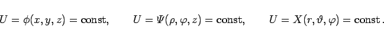

Inhalt Index DeskTop Bronstein

 Vektoranalysis und Feldtheorie Grundbegriffe der Feldtheorie Skalarfelder
Vektoranalysis und Feldtheorie Grundbegriffe der Feldtheorie Skalarfelder


| (13.10a) |
annimmt. Unterschiedliche Konstanten liefern unterschiedliche Niveauflächen. Durch jeden Punkt verläuft genau eine Niveaufläche, ausgenommen Punkte, in denen die Funktion nicht definiert ist. In den drei bisher benutzten Koordinatensystemen lauten die Niveauflächengleichungen
|  | (13.10b) |
| Beispiel A | ||
|
| Beispiel B | ||
|
| Beispiel C | ||
|
| Beispiel D | ||
|
| (13.11) |
Es ist üblich, die Niveaulinien in bestimmten gleichmäßigen U-Abständen darzustellen, wobei der betreffende U-Wert an die zugehörige U-Linie geschrieben wird (s. Abbildung).
Bekannte Beispiele sind die Isobaren auf Wetterkarten und die Höhenlinien auf geographischen Karten. In speziellen Fällen können die Niveauflächen in Punkte oder Linien entarten, die Niveaulinien in isolierte Punkte.
| Beispiel |
|
Die Niveaulinien der Felder a) , b) , c) , d) |